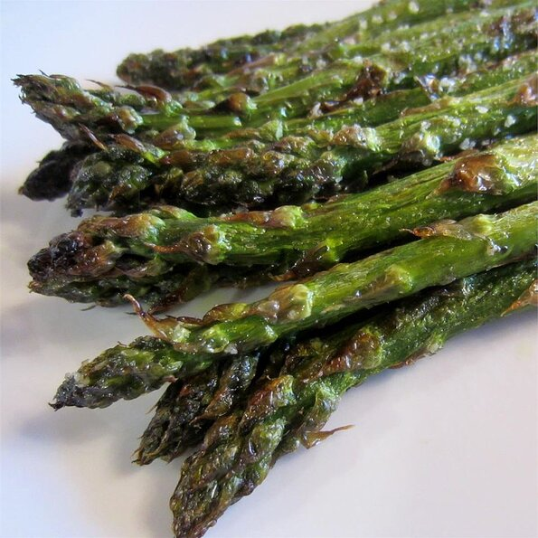

Grilled Asparagus

Description
The special thing about this recipe is that it's so simple. Fresh
asparagus with a little oil, salt, and pepper is cooked quickly over high
heat on the grill. Enjoy the natural flavor of your veggies.
Ingredients
- 1 pound fresh asparagus spears, trimmed
- 1 tablespoon olive oil
- salt and pepper to taste
Steps
- Preheat grill for high heat.
-
Lightly coat the asparagus spears with olive oil. Season with salt and
pepper to taste.
-
Grill over high heat for 2 to 3 minutes, or to desired tenderness.
Original recipe found at
allrecipes.com
← Go back